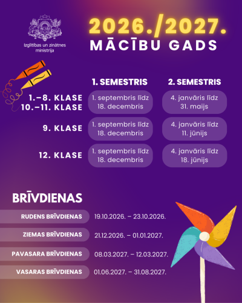

<section>
    <h1 class="page-title">Brīvlaiki 2026./2027. mācību gadā</h1>

    <span class="image fit">
        
    </span>
    <p style="font-size: 0.9em;">Avots: Izglītības un zinātnes ministrija.</p>
</section>
